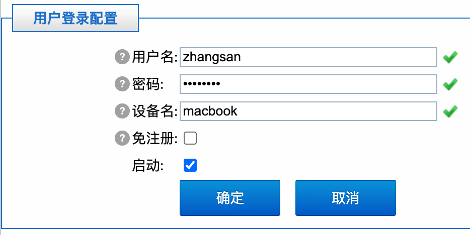

配置路径: "基础配置-用户登录"

说明:
| 用户名 | 初始用户名默认为user, 您可以将其改为自己的用户名 |
| 密码 | 系统随机生成初始默认密码, 建议将其改为自己的密码 |
| 设备名 | 此设备在VNMesh网络上的名称. 系统随机生成初始设备名, 您可以将其改为自己的设备名以方便后续使用 |
| 免注册 | 无需注册.仅能使用有限的功能. 可使用自备服务器 |
| 启动 | 控制客户端开始/停止工作 |
配置视图： config-view -> xnetc-view
使用示例:
xnetc-view>user example xnetc-view>password simple 123456 xnetc-view>no registered-user xnetc-view>hostname example xnetc-view>start
命令说明:
| user %STRING | 配置用户名 |
| password simple %STRING | 配置密码 |
| [no] registered-user | 设置/取消 免注册用户 |
| hostname %STRING | 配置设备名 |
| start | 启动服务 |
| no start | 暂停服务 |